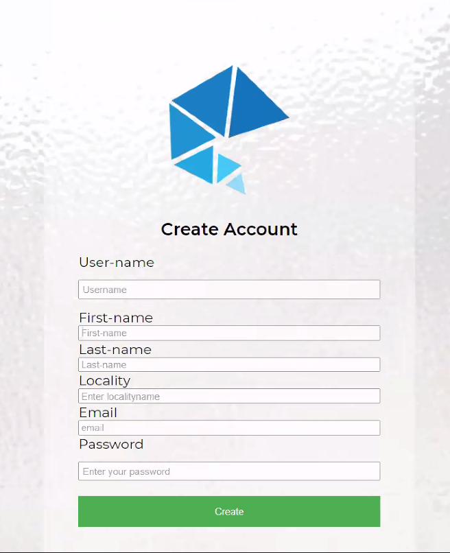
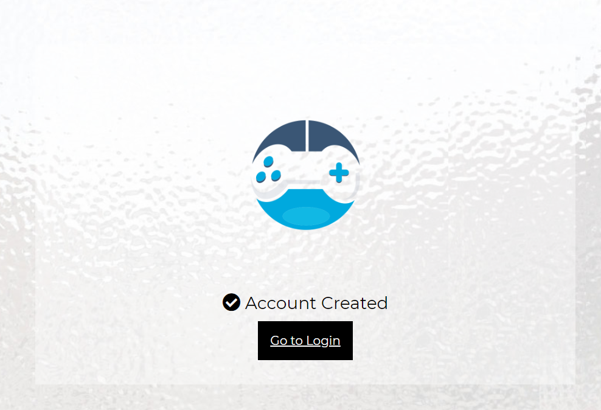
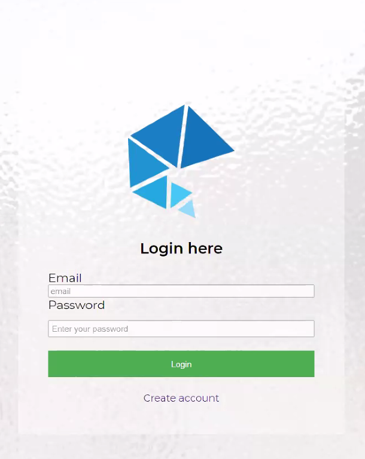
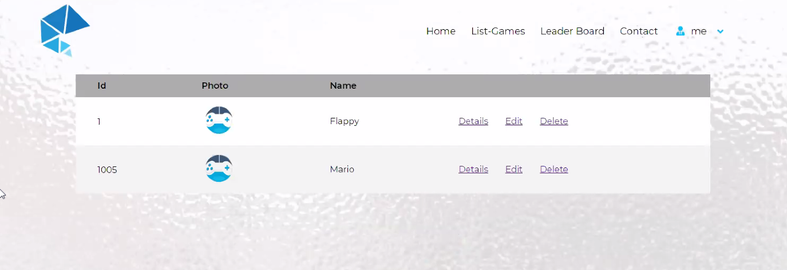
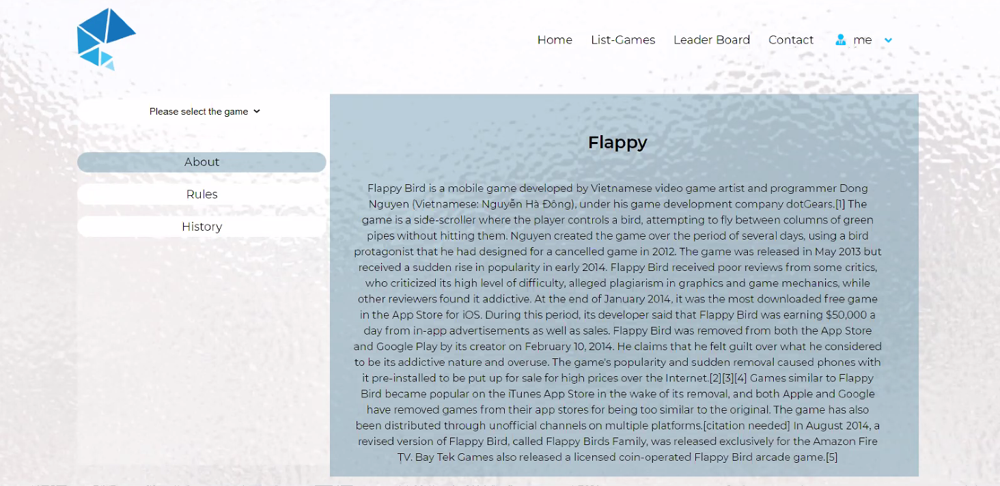
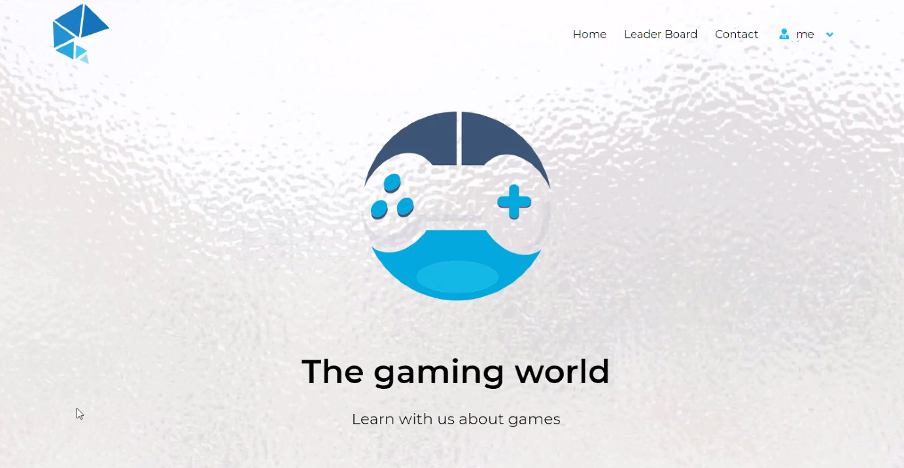
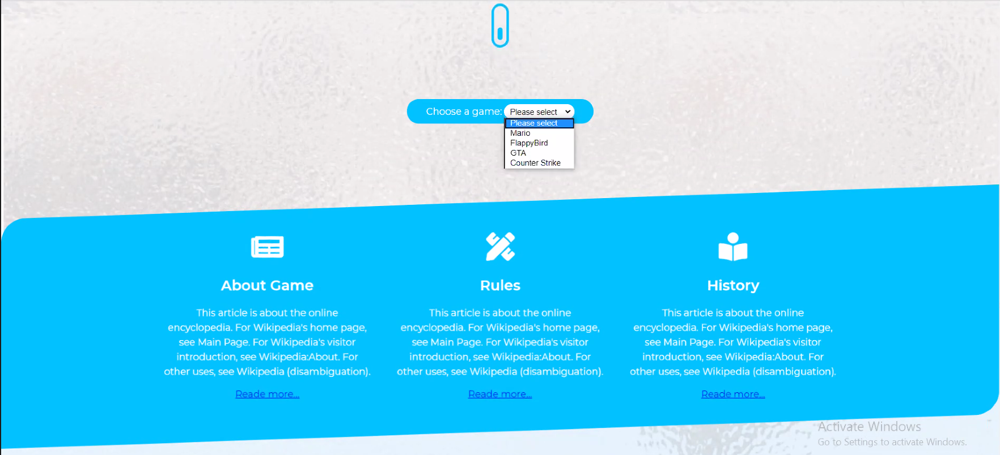
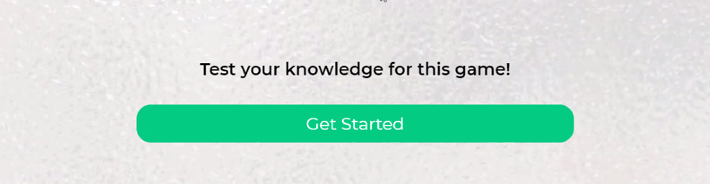
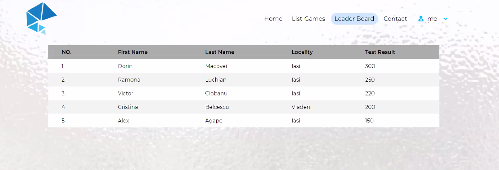
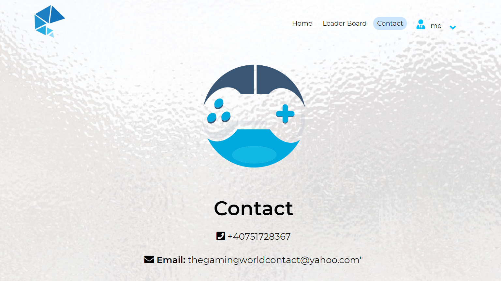

GaL - descriere aplicatie
Aplicatia Web numita GaL este prevazuta pentru invatarea regulilor unui joc si de asemenea pentru testarea cunostintelor. GaL mai pune la dispozitie si un clasament generat in urma testarii cunostintelor despre jocurile alese.
Create account
Crearea unui cont nou se realizeaza din pagina "Creare Account", prin intermediul unui formular, completat de catre utilizator cu datele sale. Dupa completarea datelor, cu ajutorul butonului "Create Account", finalizam procesul de creare a noului cont.
Daca contul a fost creat cu succes vom fi redirectionati pe o pagina noua, pe care vom putea vedea urmatorul mesaj: "Account created." si de asemenea, vom putea accesa pagina de logare, prin apasarea butonului "Go to Login".
Login
Dupa crearea unui cont, ne vom putea loga folosind userul si parola.
Pe pagina de logare avem, de asemenea si un buton catre pagina de creare a unui cont, pentru noii utilizatori.
Exista 2 tipuri de conturi, bazate pe drepturile asupra aplicatiei:
- administrator
- utilizator
Logare administrator
Pagina "Home" dupa logarea ca administrator

Dupa logarea ca administrator, avem acces de pe pagina "Home" si la lista jocurilor.
List Games
Pagina "List Games" contine un tabel cu toate jocurile disponibile in baza de date. Aceasta pagina este vizibila doar pentru administrator.
Tabelul este format din urmatoarele coloane:
- Id: numar unic care reprezinta identificatorul jocului in baza de date.
- Name: numele jocului
Din pagina cu lista jocurilor, administratorul poate sterge sau modifica jocurile si de asemenea, poate viziona detaliile specifice unui joc prin apasarea butonului "Details", care ne va directiona pe o noua pagina.
Details
Logare utilizator
Pagina "Home" dupa logarea ca utilizator
Dupa logarea ca utilizator, din pagina "Home" lipseste butonul pentru lista de jocuri, specifica administratorului.
Home
Pagina "Home" reprezinta pagina principala, vizibila dupa logare, ca administrator sau utilizator.
Pe aceasta pagina avem un "drop down list" pentru alegerea jocului dorit.
Dupa alegerea jocului, utilizatorul are de asemenea acces la detalii, prin intermediul link-ului "Read more..", pentru urmatoarele campuri specifice unui joc:
- About Game
- Rules
- History
Pe pagina de "Home", avem de asemenea si butonul pentru inceperea testului bazat pe cunostintele acumulate in urma invatarii regulilor jocului ales din lista prezentata mai sus.
Leader Board
Pagina "Leader board" contine un tabel cu clasamentul in urma testarii cunostintelor despre regulile si comportamentul jocurilor.
Leaderul clasamentului este utilizatorul care a acumulat cel ami amre numar de puncte in urma testelor.
Contact
Pagina "Contact" contine date de contact ale administratorilor aplicatiei Web GaL.